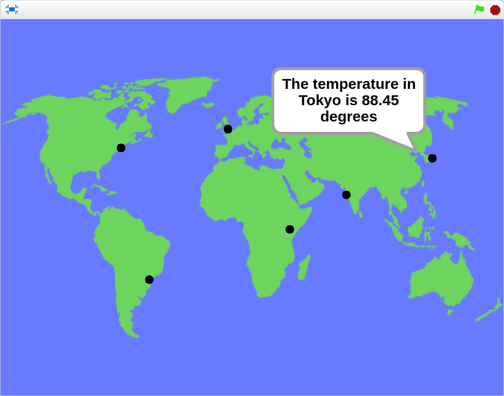

Contents
Introduction
This Scratch extension lets you access current weather information for locations all around the world. You can access temperature, humidy, wind speed, cloudiness, and even trigger events when certain weather conditions are met.
The weather data is provideded by OpenWeatherMap.

Example project Weather Around the World
Getting Started
All you need to use the weather extension is an active internet connection.
Load the Weather extension on ScratchX
Scratch Blocks
This is a brief description of each of the Scratch blocks included in the Weather extension.
Gets current weather information for a certain location.
- temperature
- The temperature in degrees fahrenheit (imperial) or celsius (metric)
- weather
- A short description of the current weather conditions (e.g. clear sky, broken clouds, etc.)
- humidity
- The humidity between 0 and 100%
- wind speed
- The wind speed in miles per hour (imperial) or meters per second (metric)
- cloudiness
- The amount of cloud cover between 0 and 100%
Runs when the weather meets a certain condition.
Sets the unit format to either imperial or metric.
Gets the current unit format.
Example Projects
- Weather Example
- Displays current weather information for Cambridge, MA and adjust the visibility of the cloud sprites based on current cloud cover.
- Weather Around the World
- Displays current temperature information from a few locations around the world.